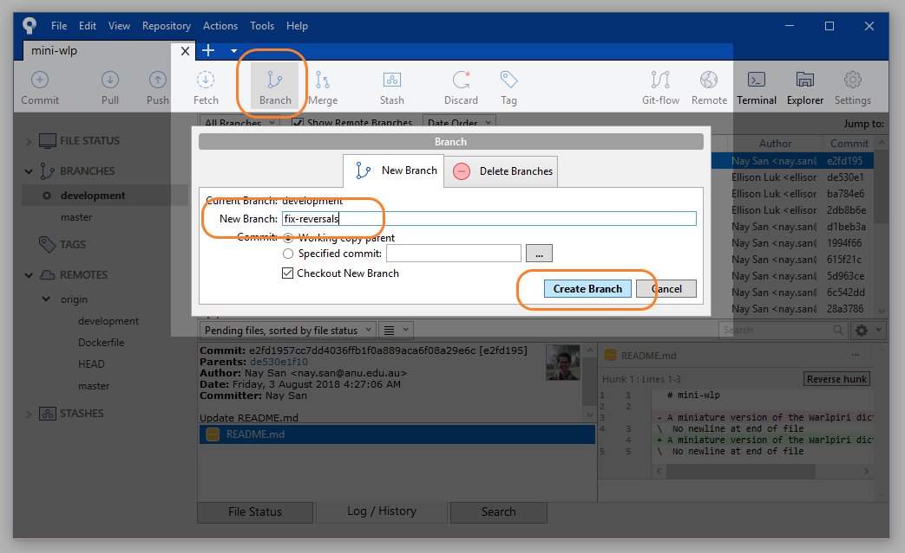
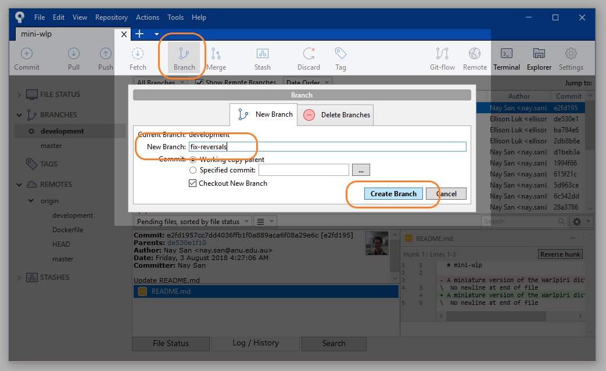

Git workflow tutorial (step-by-step)
Ellison Luk
2019-02-18
Source:vignettes/wlp-git_workflow.Rmd
wlp-git_workflow.RmdOverview
This tutorial will show you how to use Git and Sourcetree to oversee your project’s workflow.
Using Git allows each member to work on their own part of the project in parallel with other members of your team, without worrying about conflicting versions.
The analogy goes like this:
- the
masterbranch is the “trunk” of the project - no changes are directly made here - each
featurebranch is an offshoot where individual members can work on some aspect in detail - once their purpose is fulfilled, they can be merged back into themasterbranch (either directly, or via otherfeaturebranches)
This way, work can be compartmentalised while minimalising conflicts and localising each member’s changes, making the process easily accountable for each member.
From the Setup tutorial, you will have been able to clone the repository into your own machine. We will now go through how you can go about making changes.
Step 0: Refresh and Pull
This will be what your interface will look like immediately after cloning.

Default
Refresh your repository status by selecting it from this dropdown menu.
Refresh Status
Now, you can pull changes from the remote repository into your local repository. Pulling a branch from the repository means that you are taking that branch and updating your own repository to match the contents of the branch you pulled. This is like synchronising your files between a cloud or online drive and your machine, except you can be quite specific about what you are pulling.
For the tutorial, you can just select the Pull icon and confirm it on the pop-up window. If you have just cloned the repository (from the setup tutorial), pulling will not do anything, since both repositories will be exactly the same.


Step 1: Checkout and create branches
A branch is an instantiation of the repository that allows you to make changes separate from other branches.
This project already has remote branches (they are not tracked by our Sourcetree yet), which we can pull to make them locally available. Moving from one branch to another is known as a checkout.
On the left side pane, select Remotes, origin, and then double-click development. A window will pop up confirming that you would like to Checkout New Branch. Selecting OK with the box ticked, this will create a new local branch called development, which will have all the developments and changes from that branch on your computer.


Now, let’s create a new branch from this development branch. To create a new branch, select the branch icon: give it a useful name that tells us exactly what it is for (we will use fix-reversals), and confirm. Your new branch will now appear on the left under your list of branches. You will now also see on the log that a new branch has been created.
Keep in mind that you should still try to minimise conflicts with other members of the team by restricting the scope of your changes to a single issue (in our case: only dealing with gloss lines in a dictionary file). Though some conflicts will be inevitable, you can pre-empt them effectively by just sticking to your own parts of the project.
 

Step 2 Make changes
Now you can start to make changes to the file(s) in your repository. When you cloned your repository, you should have put it somewhere in your directory. The branch you are currently on is the version of the repository that you can access. If you checkout other branches, then the files will change accordingly.
You can directly access the folder of your repository by clicking Explorer.


For this tutorial, we’ll use the following issue as an example.
ISSUE:
We have `\gl` lines to indicate the gloss of a Warlpiri word, and `\rv` lines to indicate which English words should direct to this Warlpiri word in the 'reversed' dictionary. Historically, both functions were handled by the `gl` line, with `^` and `[]` used to indicate the `reversal` entry words, but this was deemed too clunky to validate. To address this, `\rv` lines were introduced: they are clones of `\gl` that have been reduced to limit the size of the reversed dictionary. The consequence is that `\gl` contains unnecessary reversal information and `\rv` is not always succinct. While this is not grammar-breaking, it is aesthetic clutter that can be fixed.
Of course, you can do this line-by-line, but you can also use script to help you out. How you can do this will be covered in another tutorial, but if you find yourself involved in reading or writing script, note the following:
- ensure the script is labelled clearly
- you can probably deduce what a script is doing by looking at the comments (green text prefaced by
#).

Using script to do mass changes
It is helpful to keep a track of your changes as you are making them. DiffMerge is a great desktop tool for this: simply supply the old file and the changed file, and it will show you what the differences are (this is called a diff). There are also online tools for doing this on the fly (copying and pasting chunks of text).

Diffing changes
Once you have completed your changes for the day (or for the entire issue), make sure you keep a note of where those files are saved. Script files belong inside the mini-wlp/scripts folder, and lexicon files inside the mini-wlp/src folder.


After you have finished making our changes, you can bring all our changes from the test file into the master file.
Step 3 Commit changes
A commit is a saved state of the branch. By dividing your work up into stages that are summarised by single commits, you can keep track of what your work progress.
Return to your Sourcetree window and you will see that the log records that there are Uncommitted changes (i.e. the changes we made in Step 2). Head to File Status.

Uncommitted changes
Here you will see the changes that Sourcetree has detected: a new untracked file called clean-reversals.R (our script) and a modified wlp-lexicon_master.txt (our lexicon file).

Staging Files to be Committed 1
Notice that Sourcetree conveniently provides a diff of all the changes; you can stage as many or as few changes as you want, but most of the time, you will want to select Stage All.
Staging Files to be Committed 2
You may now commit the changes you have staged. Summarise those changes in your commit label, make sure that Push changes immediately to - is left unchecked, and select Commit.

Select Commit
You will now see your commit on the log!

Commit Created
When you are working on your own, you will be cycling through steps 2 and 3 until the aims set out by the feature branch has been fulfilled. From there, you may proceed with the steps set out by the rest of the tutorial.
Step 4 Merging: Checkout development branch
Our fix-reversals branch is now one commit ahead of development (where we branched off from in Step 1). Once you have completed your work on this branch, it is time to merge back into the main branch.
To merge, we first checkout the development branch.


Step 5 Merging: Pull again
Refresh your repository status. Sourcetree will let you know if there is anything new to pull (in our case, nothing - but if someone else has been working on the development branch in the meantime, there may be new commits to pull).


Step 6 Merging: Select Merge
Now we will merge our two branches: the changes in fix-reversals will now appear in development. If you did not need to pull anything in the last step, then this should run without any conflicts.


Step 7 Resolving conflicts
If someone did make their own changes to development in the meantime, there may now be conflicts between their version and yours. Git will flag all the conflicts. Refer to the Git problem-solving tutorial on how to resolve merge conflicts.
Step 8 Push
Now we are ready to push our files back into the remote repository (where pulled in Step 0). Select Push and a popup window will ask you which branches you want to push. If you would like your feature branch to be available to your collaborators, you may select that to be pushed to a remote branch of the same name.
In this case, since all our work has already been merged into the development branch, we can simply select development.


Step 9 Delete feature branch
If you did not push your feature branch (fix-reversals), and you have no use for it any more, you may delete it.
NOTE: If you pushed your feature branch (as in Step 8), deleting your branch will only delete it locally (on your machine): it will make no difference to the branch on the remote repository. To delete a remote branch requires a force delete, which is very dangerous since this will affect how your collaborators use that branch - always discuss with them before deleting remote branches.
You cannot delete a branch that you are still on, so make sure you are on the development branch (or any other branch) when you delete the feature branch.


Beyond
You (and your team members) will cycle through steps 0 to 9 until the development branch has reached a certain stage of completion. When that happens, your team may consider merging development into the master branch. This is basically the same process as set out in Steps 4 to 6: checkout the master branch, right-click development and select Merge. There should be no conflicts as no one should have been working directly on the master branch.